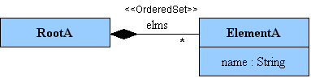
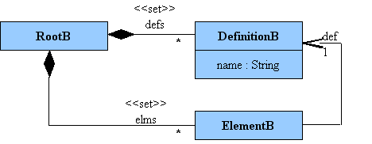
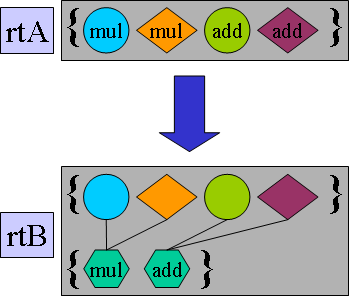
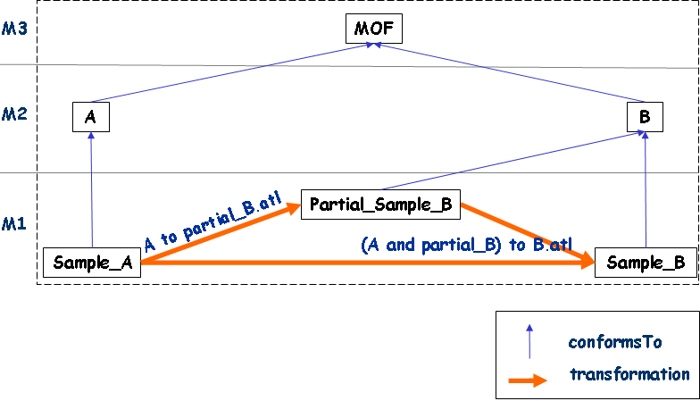

Introduction
This case deals with the way to handle side effects induced while transforming an element. We will start from an imperative algorithm to create a transformation between two metamodels. This algorithm will introduce a side effect problem. After several iteration we will provide a solution following ATL philosophy.
The Metamodels

Metamodel A
The metamodel A is composed of two concepts which represent a simple list of named elements. Different ElementA can have the same name.

Metamodel B
The metamodel B defines a slightly different concept with a third concept called DefinitionB. In this metamodel, a RootB element has a set of DefinitionB whose role is to gather and to factorize all ElementB name. All DefinitionB elements (in the context of the same RootB element) must have different name attribute value.
Goal of the transformation
The goal of this example is to transform a RootA element into a RootB one and an ElementA into an ElementB one. Created ElementB will not contain the name from the ElementA. The name will be used to create a DefinitionB element with the requirement that each DefinitionB (i.e. name value) is unique.
The figure below illustrates transformation goal with an example:

Transformation Big Picture
A first implementation
In this example, we will start with the "point of view" of an "imperative language developer" to create our transformation from metamodel A to metamodel B. Here is an algorithm we can propose in "imperative way":
RootA element is transformed into RootB and for each ElementA,
|
As one can see, for each ElementB created whose definition is not already available, the algorithm creates it on-the-fly, inducing a side effect.
The following implementation succeeded to reproduce the algorithm described above by writing a single rule transforming the source root object into the target root object. Note this rule may be dangerous as it assumes the ATL engine executes the bindings in the order they are written in the code.
Remark: The target model is browsed in this transformation, this is strongly discouraged in ATL.
|
As one can see, the described algorithm contains a side effect where the DefinitionB elements creation are made on-the-fly. This implementation makes a dangerous assertion as the ATL engine does not ensure the bindings execution order (this is a consequence of target model browsing).
How to follow the ATL philosophy
In respect of the ATL philosophy, we would like to have a rule where:
|
However if we plan to use such a rule, how can we set the def reference and reproduce the associated side effect (on-the-fly DefinitionB creation) in a more functional way?
The following ATL code proposed an other solution to reach transformation goal:
|
This ATL transformation also required target models browsing (even this is done in the endpoint). This solution may be consider better than the first one. But it does not give satisfaction. As you can see, it uses some imperative constructs that made it more difficult to understand and to maintain. As it seems not possible to solve this by using only one transformation without imperative code, we should consider to solve it by using a chain of transformations. This will allow us to solve each problem in a different transformation.
The general overview of our approach is presented in the following figure:

First step: A to Partial_B
In the first step, we create a partial model B containing the list of DefinitionB elements.
|
Second step: A and Partial_B to B
In the second step, we can easily solve the problem by using in input parameter the output model created by the first step transformation.
|
Conclusion
What we have learnt with this example:
- Using ATL imperative parts for dealing with complex situation.
- Using a chain of ATL transformations to divide transformation complexity and to avoid imperative parts.
Download

|
SideEffect |
Source code for the scenario SideEffect. |